地政学
アムステルダムは首都で、金融、航空、港湾、文化外交を担います。北海、ライン川、EU市場を結び、低地の水管理、観光、植民地史、メディアの議論も国際都市の力と緊張になります。港と空港の動きも政治化します。

🇳🇱 オランダ / 西ヨーロッパ / World City Atlas
運河、交易金融、港湾、移民の近隣、美術館、宗教的寛容、住宅難、観光、自転車交通、気候リスク、夜の政策が重なるオランダの首都です。
都市の骨格
低地の水管理、港湾、証券取引、美術館、移民地区、自転車道、観光の混雑が、絵葉書の運河都市を世界経済と日常生活の緊張へ結びつけています。
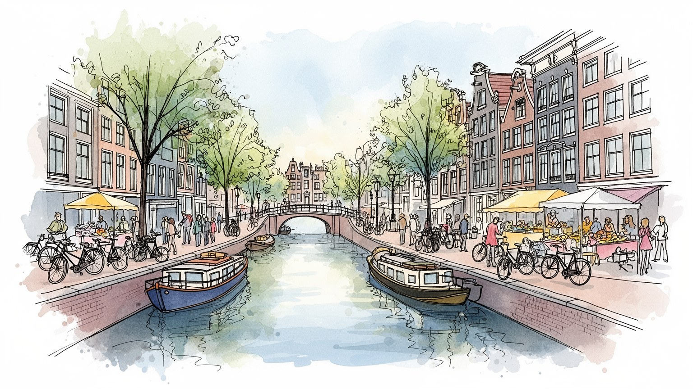
アムステルダムは首都で、金融、航空、港湾、文化外交を担います。北海、ライン川、EU市場を結び、低地の水管理、観光、植民地史、メディアの議論も国際都市の力と緊張になります。港と空港の動きも政治化します。
金融、港湾物流、観光、IT、広告、大学、医療、創造産業が雇用を作ります。専門職、ホテル清掃、配達、飲食、介護、露店や市場の仕事が近接し、家賃が生活条件を左右します。学生の仕事もあります。夜勤もあります。
改革派教会、ユダヤ人の記憶、イスラム、無宗教の生活、美術館、Ajax、クラブ、学生文化が重なります。寛容の評判は制度と商業の産物でもあり、差別や記憶政治も含めて読む街です。王の日も来ます。音楽も響きます。
旅人は運河、美術館、市場、自転車、カフェ、夜の街を楽しみます。住民には住宅不足、観光混雑、騒音、雨風、水害、子どもの通学、高齢者の買い物が同じ橋で日常になります。買い物も支えます。雨具も要ります。
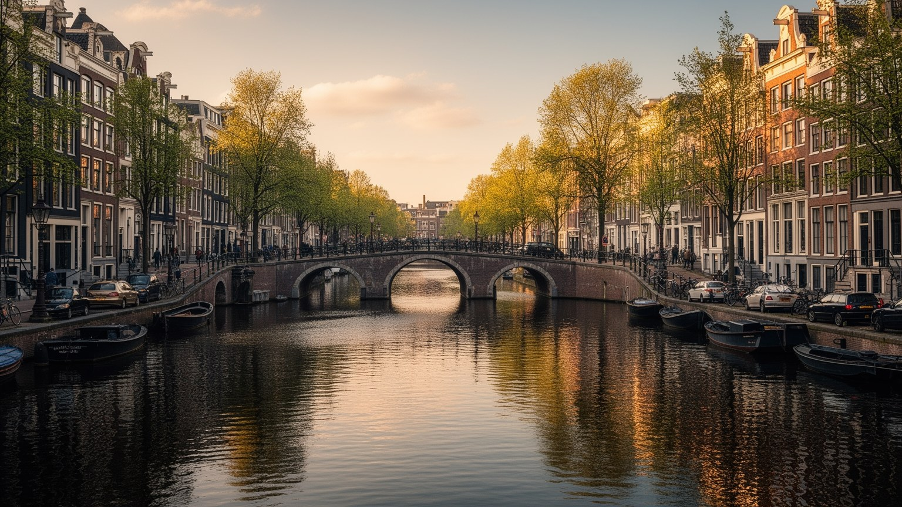
アムステルダムの都市骨格は、アムステル川の河口、アイ湾、干拓地、堤防、同心円状の運河によって作られました。中心部の運河環は美しい観光景観ですが、もともとは商船の接岸、倉庫への搬入、排水、土地造成、富裕商人の住宅地を同時に設計した実用的な都市装置でした。狭い区画に高い家が並ぶのは、軟弱な地盤、税制、土地の希少さ、運河沿いの物流が重なった結果です。水面は鏡である前に管理し続ける相手で、湿った藻の匂い、観光船の低いエンジン音、橋を渡る自転車のベル、横殴りの雨まで都市の感覚を作ります。中心部から少し離れれば、近代の埠頭、集合住宅、鉄道、郊外の住宅地、スキポール空港へ向かう交通網が見えてきます。水辺の美しさを見るなら、浸水、地盤沈下、塩水化、観光船の混雑、住民の静けさを守る規制も見る必要があります。冬の霧、夏の行列、朝の市場の荷下ろしは、同じ水路を別の時間で使います。運河を歩く楽しさは、その足元で続く長い技術と自治の上にあります。週末には運河沿いのカフェ席がすぐ埋まり、ベビーカーとスーツケースと買い物袋が橋の上で詰まります。水辺は公共空間であり、観光の商品であり、住民の玄関先でもあります。夕方には濡れた石畳が光り、窓辺の夕食の匂いも流れます。小船の波で水面が揺れ、白い鳥の声が細い路地へ返ります。
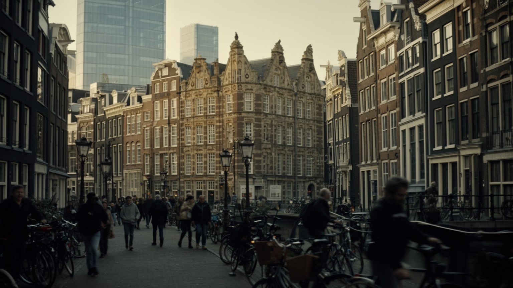
アムステルダムは、十七世紀の商人都市として世界経済史に大きな位置を占めます。東西インド会社、証券取引、保険、為替、倉庫、印刷、地図作成は、港町を情報と信用の市場へ変えました。香辛料、砂糖、茶、繊維、奴隷制と植民地支配に関わる富は、運河沿いの邸宅、美術、慈善、金融制度を支えましたが、その繁栄には暴力と搾取も含まれています。現在の都市経済は、銀行、年金運用、法律、会計、広告、IT、メディア、大学、観光を組み合わせます。英語で働く多国籍企業、欧州本部、スタートアップが集まる一方、新聞、放送、デザイン事務所、音楽関連の小さな会社も世論と流行を作ります。金融の洗練は高い所得をもたらしますが、住宅価格を押し上げ、学生や若い専門職の部屋探しを難しくします。会議室で決まる投資は、遠い港、農地、鉱山、住宅市場へも影響します。信用を売る都市を読むには、植民地の記憶、年金資金の投資先、税制の議論、オフィスを維持する清掃や警備の労働まで見る必要があります。昼のオフィス街と夜のクラブ街は別世界に見えても、広告、決済、警備、清掃、配信、イベント運営でつながっています。路上の小商いもまた、都市経済の温度を伝えます。新聞売店の見出しも市場心理を映します。利益をどの公共性へ結び直すかが、この商人都市の現在の論点です。
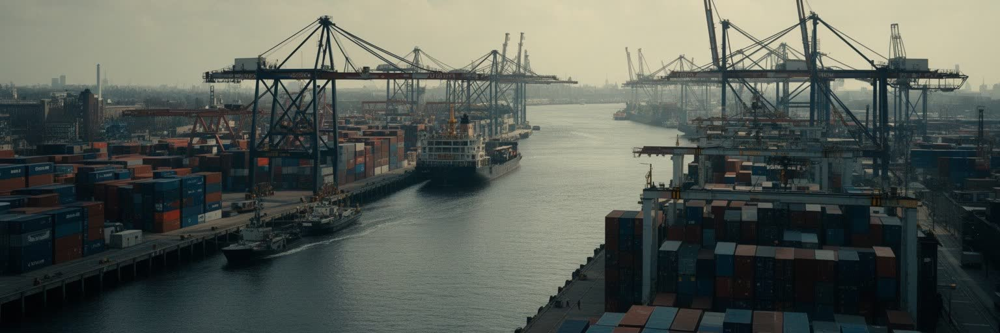
アムステルダムの港は、ロッテルダムほど巨大な象徴ではありませんが、北海運河、石油製品、農産物、建材、フェリー、クルーズ、倉庫、都市配送を通じて重要な実務を担います。歴史的な運河が市街地の中へ入り込んだ時代から、物流は外側の埠頭と広域インフラへ移りましたが、都市の消費は今も港、鉄道、高速道路、スキポール空港に依存しています。空港は観光客、出張者、貨物、移民、留学生を受け入れ、ホテル、会議、航空整備、警備、清掃、地上職の仕事を生みます。一方で、航空の騒音、排出、夜間便、空港拡張の是非は、気候政策と住民生活の大きな争点です。港湾もエネルギー転換、汚染、トラック交通、労働安全、クルーズ観光の負荷に向き合います。店のチーズ、ストロープワッフル、花市場の商品、カフェの豆、クラブの機材、オンライン注文の荷物は、外側の見えにくい物流に支えられます。倉庫の立地や橋の時間規制は、街の静けさや路上の混み方を左右します。配達自転車は雨の夜も鳴り、路上市場の箱は早朝に積まれ、カフェの前にはビール樽が並びます。旅行者の軽い買い物も、誰かの重い運搬を伴っています。その重さは、路面の段差や橋の待ち時間にも表れます。港と空港を同じ地図に置くと、アムステルダムは絵画のような中心部ではなく、北海、欧州内陸、世界の航空路を結ぶ回路として見えてきます。
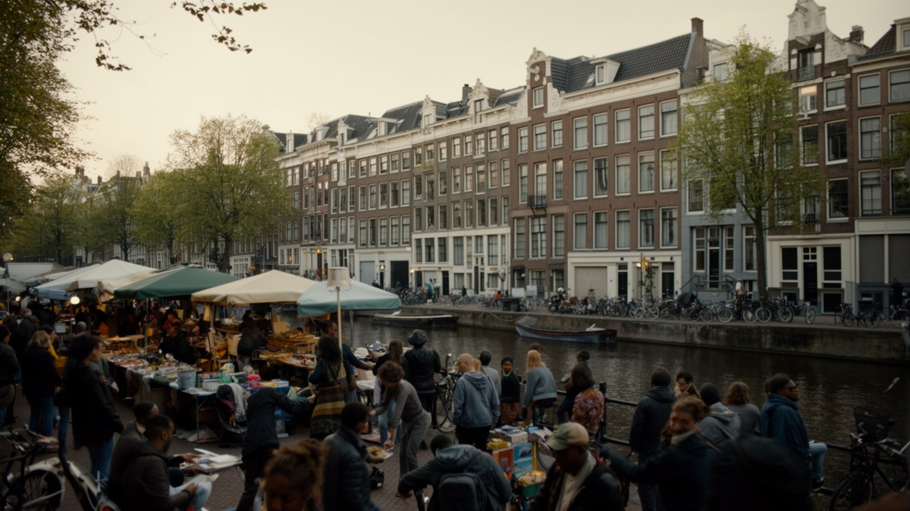
アムステルダムは古くから移民の都市です。宗教的迫害を逃れたユダヤ人、フランス系プロテスタント、ドイツや東欧からの労働者、インドネシア、スリナム、カリブ海地域の住民、トルコ系、モロッコ系、近年のEU内移動者や国際専門職が、都市の社会地図を作ってきました。デ・パイプ、ニューウェスト、ザイドースト、東部の住宅地、市場、モスク、教会、ヒンドゥー寺院、食料品店、理髪店、学校には、多言語の日常があります。アルバート・カイプ市場では魚、チーズ、花、携帯部品、揚げ菓子の匂いが混じり、露店、配達員、学生、子ども連れ、高齢者が狭い通路を分け合います。寛容という評判は本物の部分を持ちますが、住宅の分離、教育機会、警察との距離、就職差別、イスラムへの偏見、植民地史の記憶は現在の論点です。移民は飲食、清掃、介護、配送、建設、港湾、空港、大学、ITまで広く働き、都市の便利さを支えます。多文化性を名物の食や祭りとして楽しむだけでは足りません。誰が店を開き、誰が早朝のトラムに乗り、誰が子どもの進学を支え、誰が中心部の観光経済から遠ざけられるのかを見る必要があります。週末のサッカー中継を流す店、学生向けの安い食堂、夜遅くまで開く小売店も近隣の結び目になります。路上経済は不安定ですが、孤立を避ける窓口にもなります。学校帰りの子どもの会話にも多言語が響きます。
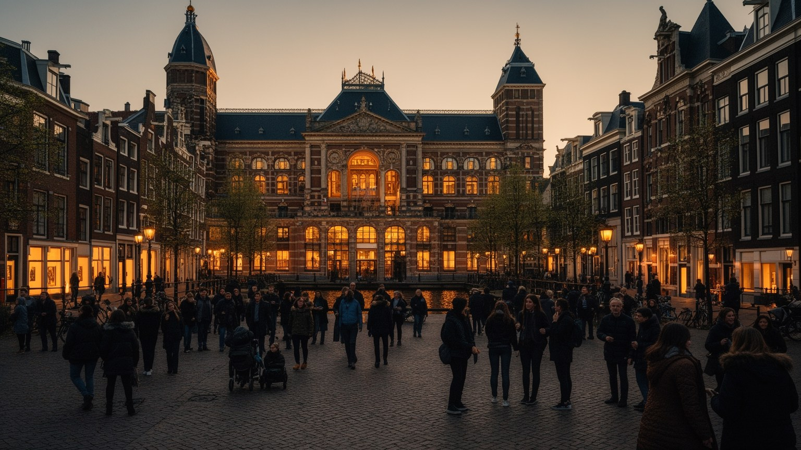
アムステルダムの文化的な力は、ライクスミュージアム、ファン・ゴッホ美術館、市立美術館、レンブラントの記憶、アンネ・フランクの家、運河沿いの劇場や書店に濃く現れます。十七世紀の絵画は商人、海、室内、光、地図、植民地交易の富を見せ、近代の美術は個人の感情と都市の変化を映します。美術館は世界中から来る旅行者を集めますが、展示は名品鑑賞だけでは終わりません。黄金時代を語るなら、奴隷制、植民地支配、ユダヤ人迫害、戦争占領、移民の記憶を扱わなければなりません。アンネ・フランクの家は、運河都市の親密な家屋が迫害と隠れ住む恐怖の場所にもなり得たことを示します。ミュージアム広場では、子どもが芝生を走り、学生が課題を広げ、観光客が雨宿りをし、Ajaxの試合日には赤白のシャツが街路に増えます。文化施設の成功は観光収入を生む一方、混雑、チケット価格、展示の言語、警備、清掃、教育普及の仕事を伴います。公共放送や新聞は展示の言葉を批評し、大学の授業は記憶の扱いを問い直します。芸術は静かな鑑賞であると同時に、街の会話を動かすメディアでもあります。修復士、案内員、研究者、清掃員、小さな劇場や書店も文化の基盤です。カフェでの読書や音楽談義も記憶の共有を支えます。作品の前で立ち止まることは、富がどこから来て、誰の声が展示に入ったのかを考える入口になります。
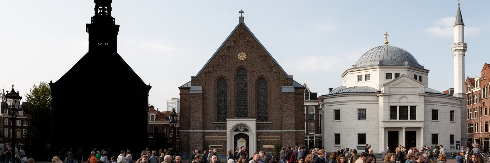
アムステルダムは寛容の都市として語られることが多いです。宗教改革後のオランダでは改革派が公的な力を持ちながらも、カトリック、ユダヤ人、メノナイト、外国人商人が一定の範囲で暮らし、礼拝し、商売を続けました。隠れ教会やシナゴーグの歴史は、信仰の自由が完全な平等ではなく、商業都市が秩序と利益を守るために作った現実的な妥協でもあったことを示します。第二次世界大戦中のユダヤ人迫害は、その物語に深い断絶を刻みました。現在の都市には、改革派教会、カトリック教会、シナゴーグ、モスク、ヒンドゥー寺院、仏教団体、無宗教の住民が共存し、宗教は葬儀、食、教育、家族、移民の支援に関わる生活制度です。King's Dayの橙色の群衆、追悼式、プライド、ラマダン明けの食事、教会の鐘は、公共空間の使い方を毎年問い直します。ですがイスラムへの偏見、反ユダヤ主義、世俗主義と宗教的慣習の摩擦も残ります。寛容を読むには、誰が公の場で信仰を見せられるのか、どの記憶が記念碑に残るのか、学校や職場でどんな配慮があるのかを見る必要があります。祝祭の日には船上の音楽、屋台、家族連れ、学生の群れが混ざり、静けさを求める住民との距離も見えます。自由は歓声だけでなく、眠る権利とも調整されます。寛容は性格ではなく、法、自治、近隣の交渉、教育、記憶の継承によって毎日作り直されます。
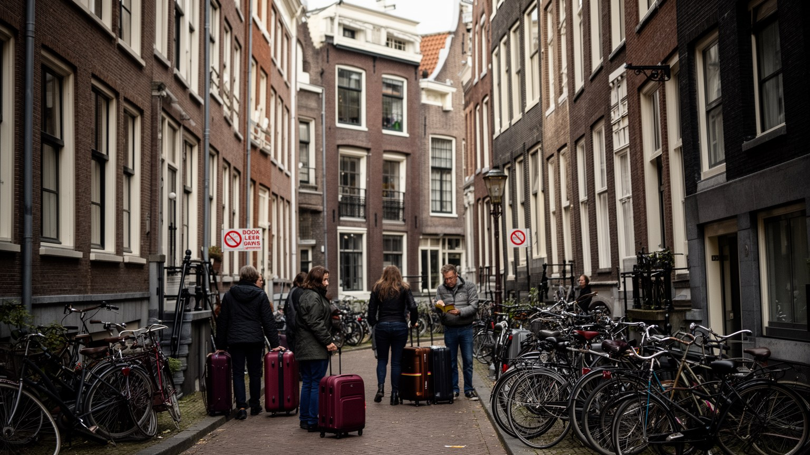
アムステルダムで暮らす難しさの中心には住宅があります。歴史的中心部の保存、土地の希少さ、国際企業と専門職の流入、学生、短期滞在、投資、建設費の上昇が重なり、家賃と購入価格は多くの住民に重いです。運河沿いの小さな家は絵になりますが、急な階段、湿気、修繕費、地盤、観光客の騒音と向き合う生活の器でもあります。短期賃貸やホテル需要は一部の地区で住民向けの住宅を減らし、中心部の店は日用品より土産物、飲食、娯楽へ傾きやすいです。観光は雇用と税収を生みますが、混雑、ゴミ、酔客、住民の疎外感も生みます。スーパーマーケットの列、パン屋の朝、花屋、古着店、チーズ店、露店の現金払いまで、買い物の風景には観光と生活が混ざります。子どもは雨具で通学し、高齢者は歩行器や電動自転車で市場へ向かい、住民はベルを鳴らしながら人波を抜けます。市は宿泊規制、クルーズ制限、観光の分散を進めていますが、都市の魅力そのものが人を呼ぶため、解決は単純ではありません。大学の掲示板には部屋探しの告知が並び、親元を離れた学生は通学時間と家賃を天秤にかけます。高齢者の近所づきあいも、店の入れ替わりで変わります。訪問者の自由と住民の静けさ、保存と新築、国際性と手ごろな住まいを同時に調整しなければ、運河都市は生活の場から舞台へ傾いてしまいます。
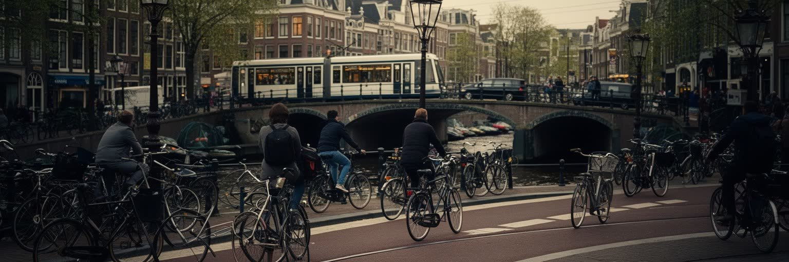
アムステルダムは自転車都市として世界的に知られます。平坦な地形、短い距離、密な街路、自転車道、駐輪場、交通教育、車を抑える政策が重なり、住民の日常移動を支えています。自転車は観光の小道具ではなく、通勤、通学、買い物、子どもの送迎、夜の帰宅、公共交通への接続を担う生活インフラです。朝は箱型自転車に子どもを乗せた親、大学へ急ぐ学生、介護先へ向かう労働者、配達アプリのバッグを背負う若者が同じレーンを走り、ベルの音が角ごとの合図になります。トラム、地下鉄、バス、鉄道、フェリーも重要で、中央駅は国内外の列車、港、旧市街、北岸の再開発を結ぶ結節点です。ただし、観光客の不慣れな運転、歩行者との衝突、駐輪の過密、雨風の日の負担、子どもや高齢者、障害者の移動、配達労働の安全、電動自転車の速度差が課題になります。中心部では歩行者、トラム、配送車、自転車、観光船が狭い空間を取り合います。試合後のAjaxサポーター、買い物帰りの高齢者、観光客のレンタル自転車が同じ交差点に入り、譲り合いの作法が一瞬で試されます。ベルは警告であり挨拶でもあります。自転車文化は自然発生した習慣ではなく、事故への反省、住民運動、公共投資、空間配分の政治によって作られました。他都市が学ぶべきなのは自転車の数ではなく、移動を公平にする制度の積み重ねです。
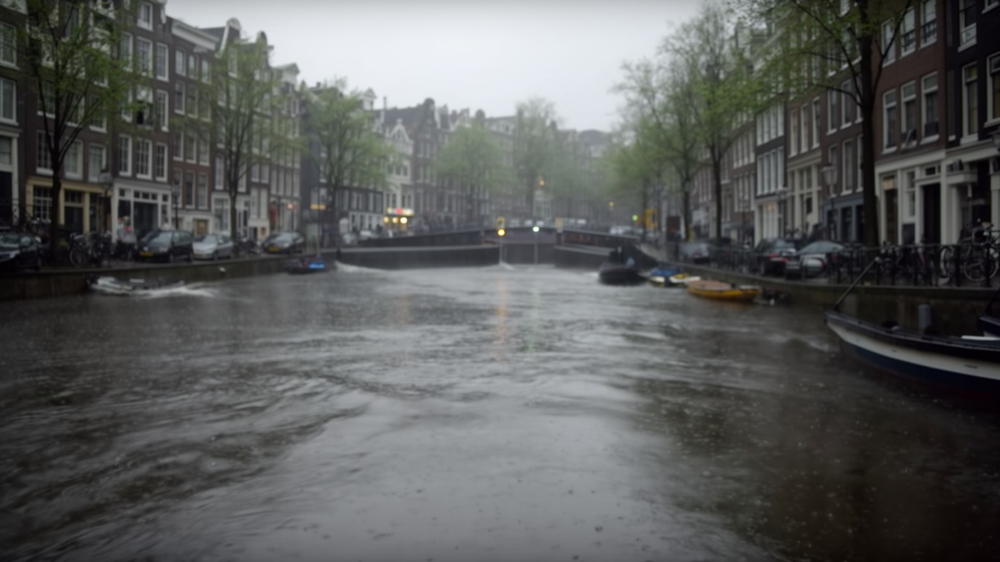
アムステルダムの気候は比較的穏やかですが、水との関係は常に緊張を含みます。低地にある都市は、海面上昇、強い雨、川の水位、地下水、地盤沈下、排水能力、塩水化の影響を受けやすいです。オランダは堤防、ポルダー、ポンプ、河川空間、水管理の技術で知られますが、気候変動は過去の設計をそのまま続ける安心を許しません。短時間の豪雨は地下室、道路、トラム、駅、古い建物に影響し、熱波は水辺の都市にも健康リスクをもたらします。石畳は雨で滑り、運河は湿った匂いを強め、海からの風は傘を裏返し、自転車のブレーキ音やトラムの金属音まで鋭く聞こえます。気候政策は堤防の高さだけでなく、住宅の断熱、雨水を受ける広場、運河の水質、船の排出、空港と観光の炭素負荷、低所得地区の暑さ対策を含みます。水管理は専門家の仕事に見えますが、住民の保険、家の修繕、地下室の使い方、学校の避難、観光船の運航にも関わります。観光混雑の日ほど、濡れた歩道や橋の狭さは強く意識されます。子どもの送り迎え、高齢者の通院、夜の帰宅は、天気によって都市の難度が変わります。雨音は観光の情緒である一方、生活の遅れにもなります。涼しい図書館や学校は、子どもや高齢者の避難先にもなります。水を遠ざけるだけでは都市らしさを失うため、水を使い、楽しみ、恐れ、管理する複数の姿勢を重ねることが必要です。
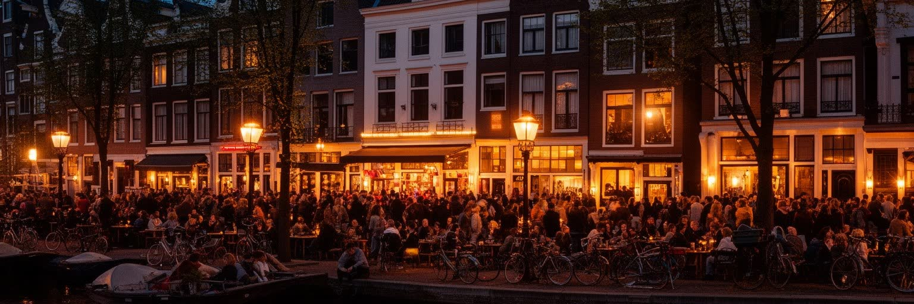
アムステルダムの夜の文化は、クラブ、バー、ライブハウス、カフェ、セックスワーク地区、コーヒーショップ政策によって世界的に知られます。自由で寛容な都市というイメージは観光客を引きつけますが、実際には放任ではなく、害を減らし、犯罪を抑え、住民生活を守るための細かな管理が続いています。大麻販売の黙認政策は薬物使用を地下化させないための現実的な制度として発展しましたが、国際観光、違法流通、近隣の騒音、若者への影響、組織犯罪との関係をめぐる議論もあります。赤線地区も、性労働者の権利、安全、搾取、人身取引、観光客の消費行動、住民の暮らしが絡む複雑な空間です。夜の経済は飲食、警備、清掃、タクシー、医療、音響、舞台運営、ホテル労働を生み、テクノ、ジャズ、インディーの小さな会場から大きなクラブまで学生と旅行者を集めます。濡れた石畳、ビールの匂い、運河沿いの笑い声、深夜の自転車ベルは魅力でもあり、眠れない住民には負担です。市が地区の再編や観光広告の制限を進める背景には、自由の象徴が生活環境を壊すことへの危機感があります。カフェで長く話す学生、終電を逃した観光客、朝の清掃員、救急スタッフは、同じ夜を別の角度から経験します。音楽の自由も、路上の安全と隣り合わせです。自由は秩序の反対ではなく、弱い立場の人を守る制度と近隣の合意があって初めて持続します。
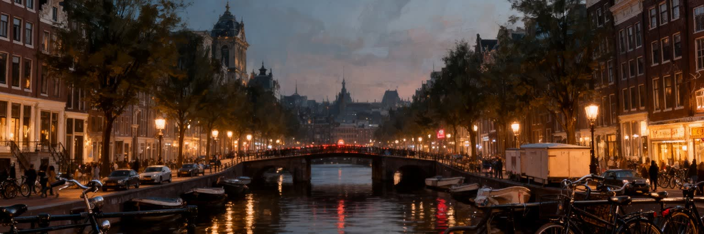
アムステルダムは、運河、自転車、美術館、自由な夜の文化によって記憶されやすいです。その印象は確かに都市の魅力を捉えていますが、それだけでは交易金融の歴史、植民地と奴隷制の記憶、港湾と空港の物流、移民の労働、住宅難、観光混雑、宗教的寛容の限界、水害リスクを見落とします。小さく歩ける中心部は、世界中の資本、人、商品、記憶が集まる濃い結節点であり、住民の静かな近隣でもあります。運河の匂い、自転車ベル、カフェの湯気、市場の魚と揚げ菓子、雨風、King's Dayの橙色、Ajaxの歓声、クラブ帰りの足音までが、制度の説明だけでは届かない都市の手触りを作ります。アムステルダムを総合的に読むには、運河環、ザイドースト、港、スキポール、大学、ミュージアム広場、赤線地区、移民の市場、郊外の住宅地、堤防とポンプを同じ地図に置く必要があります。美術館の名画は商人都市の富を映し、自転車道は空間配分の政治を映し、夜の街は自由と管理の境界を映します。都市の価値は、観光と住民生活、記憶と利益、水辺の魅力と気候リスクをどこまで調整できるかに表れます。橋を渡る時、その下には水管理の技術、移民の仕事、買い物の日常、自由をめぐる議論が流れています。子どもの通学路、高齢者の市場通い、学生の下宿、メディアの論争、買い物の列まで重ねると、絵葉書の奥にある暮らしの厚みが見えてきます。